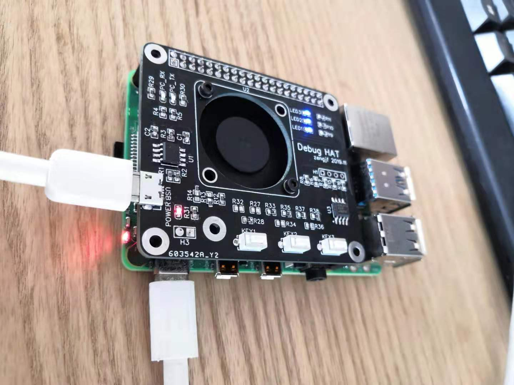
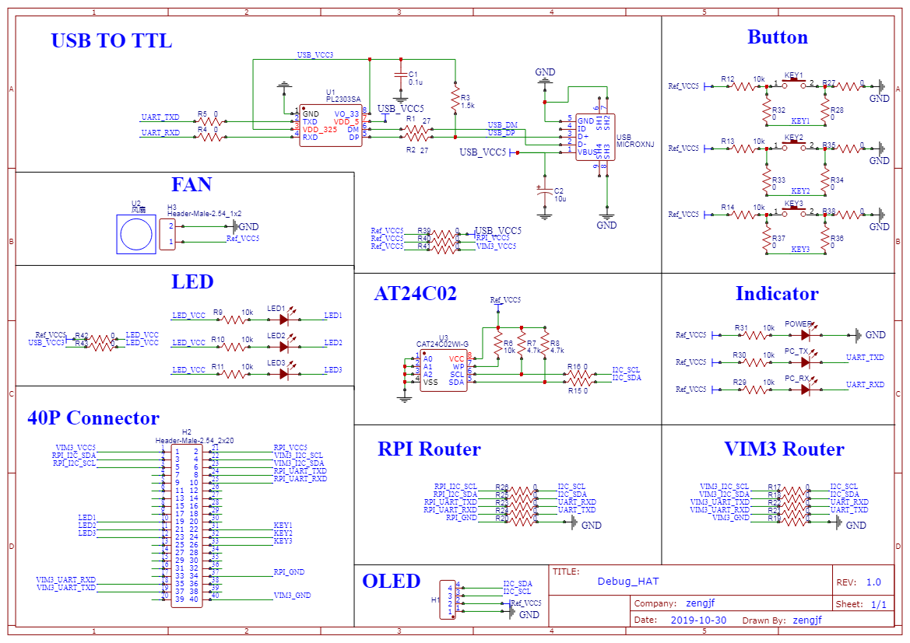
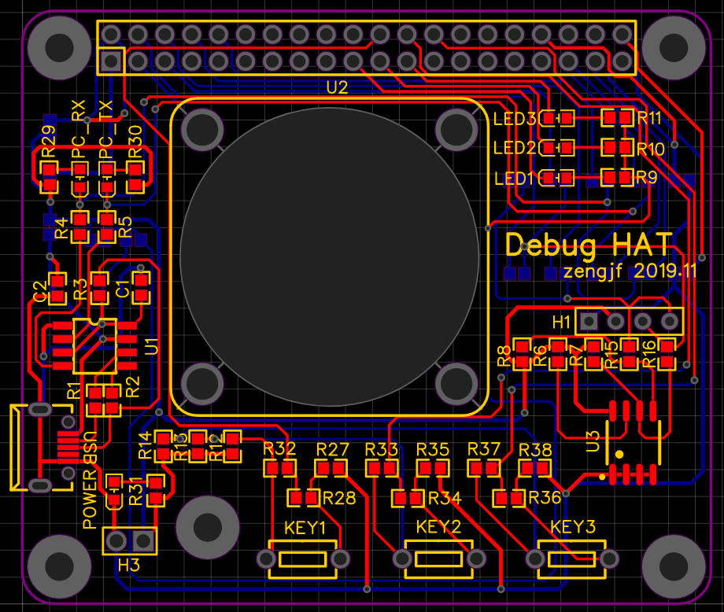
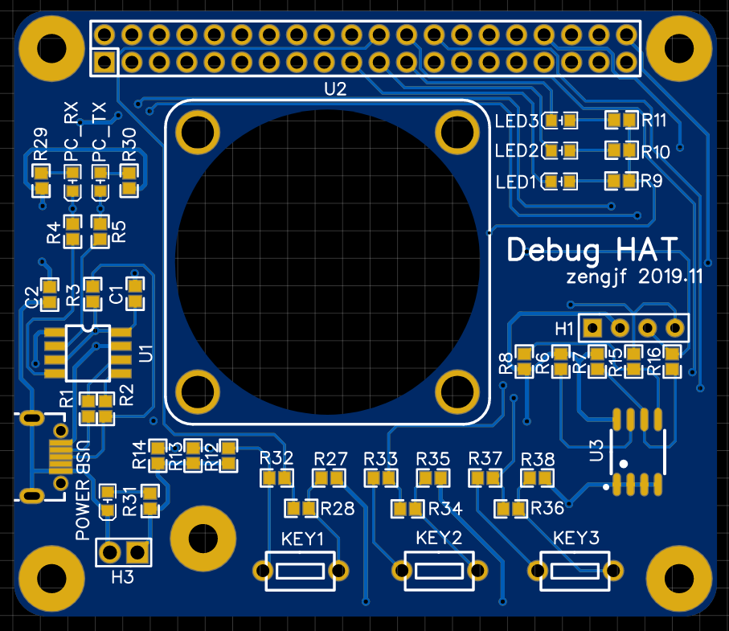
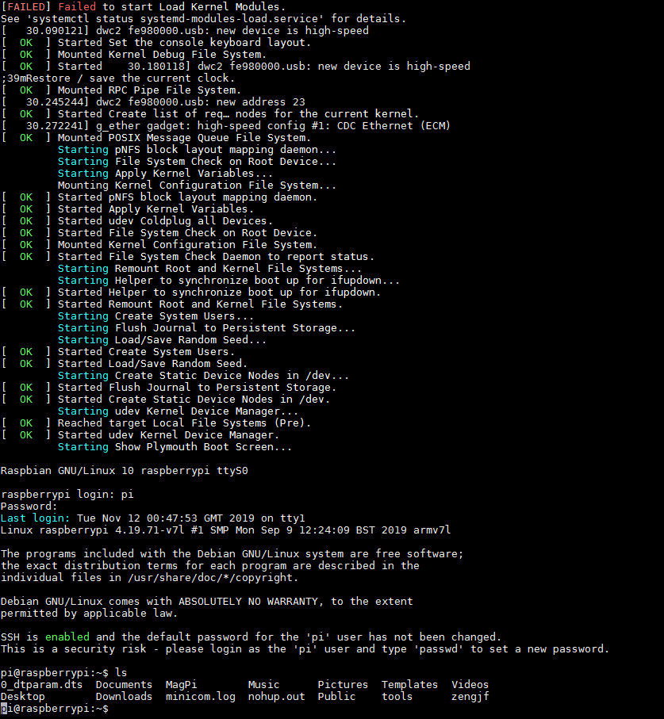

README
制作用于调试树莓派、VIM3的调试扩展板
主要是再处理树莓派和VIM3的时候发现他们的debug port（uart）是在40P的扩展口里，自己又不想每次带一个USB转TTL的模块，所以做了这个扩展板：
PL2303SA；
3 * LED灯；
3 * 按键；
24C02 EEPROM；
注意：
通过选择焊接
RPI、VIM3两组电阻选择Raspberry Pi、Khadas VIM3主板；R39、R40、R41用于选择外围电路电源；原理图中有不少
0欧姆电阻，主要用于选择，请注意查看原理图；

Gerber File
BOM
Schematic

PCB


Console
